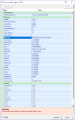

You are typically required to configure an Accumulator agent to analyse an accumulating process value and to calculate its difference in value (or change) between successive events or over a specific time (interval).
To do this, click on and read each of the following options:
First, open the Edit Accumulator Agent dialog as follows:

In the Edit Accumulator Agent dialog, you can specify the accumulating process value that you want to monitor and assess, in one of the following two ways:
Typically, you define a constant interval of time over which the differential increases in value is calculated. The agent provides you with the ability to select the method you’d prefer to use.
You do this on the intervalMode slot property, as follows:
Note: The triggerNow slot (and button) performs a manual end of period, which is effective in any mode selected by this intervalMode slot.
These first three interval options use the intervalTag, which is a tag you can browse to set when the end of an interval has occurred:
| 0 = Interval tag value goes to zero | The end of the interval occurs when the value of the intervalTag changes from any non-zero value to a value of zero [0]. |
| 1 = Interval value goes (from zero) to non-zero | The end of the interval occurs when the value of the intervalTag changes from a value of zero [0] to any non-zero value. |
| 2 = Any interval tag value change | The end of the interval occurs when the value of the intervalTag changes in value to any other value (a different value from its current value). |
The next two options let you to define the required interval by making use of the system time (the time of the Agent Server computer) and the interval slot, which specifies the duration of each period in minutes:
| 3 = Synchronised (to clock - default) |
Important: If you are using this method, then you need to ensure that the specified interval is divisible into 60 or is a multiple of 60 otherwise period timing errors will occur. |
| 4 = Not synchronised (to clock) |
|
If you choose the final option then you typically need to devise a method of driving the triggerNow slot via a script or expression or this agent can calculate the differential value whenever you choose to.
| 5 = Manual trigger | The rate of change and its alarm limits only applies when using periods that have regular intervals. |
If necessary, you can configure the alarm limits and the deadband when required, for this differential value, and the rate of change of this differential value over the specified period.
Tip: The deadband slot is used to desensitise these alarm limits and prevent unnecessary alarms if the value is oscillating. In other words, this specifies the ‘band’ (size of) the ‘dead’ area outside these alarm limits, which the value must reduce by before the alarm is cleared.
Important: The deadband slot ONLY applies to the alarm limits for the differential value and NOT to the rate of change alarm limits.
The following alarm limits can be defined for the differential value in the Value alarm levels section of the properties dialog:
Note: Whenever the Low-low alarm is on, the Low alarm must, by definition also be on. Similarly, whenever the High-high limit is reached, the High limit will already have been passed.
The following alarm limits can be defined for the rate of change of this differential value over the specified period in the Rate alarm levels section of the properties dialog:
Note: The deadband slot does NOT apply to these rate alarm limits.
To maintain a history of the differential values for each period you must specify the SQL Server database and table that is used to store these records:
|
Note: If you specify global, the Global OLE DB connection string of the Agent Server is used, which is specified in the Adroit Config Editor.
|
If a valid connection and table is specified, the History table will be created as follows:
| Column name | Type | Description |
|---|---|---|
| idx | Int Auto | incrementing index |
| dt | datetime | Period end date and time |
| value | float | Calculated value for period |
| accumulator | float | The accumulator reading (inputValue) at the end of the period |
If you want automatic management of this data, then specify how many days worth of data you want this table to store in the housekeepDays field, to ensure that you keep the most relevant (most recent) records only.
Note: The default value of 0 disables this functionality.
To start analysing the accumulating process:
At the end of every period:
Tip: You can view the amount of time that has passed (elapsed) from the start of the current period, in minutes, by viewing the elapsedTime slot.
 1. Open the Accumulator agent dialog
1. Open the Accumulator agent dialog